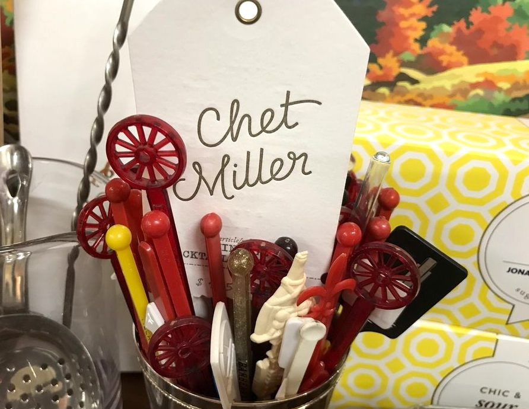
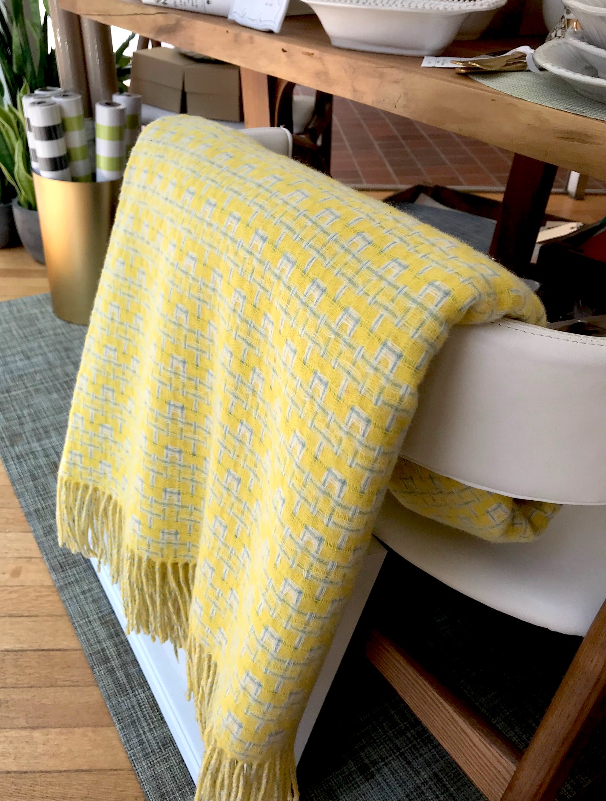
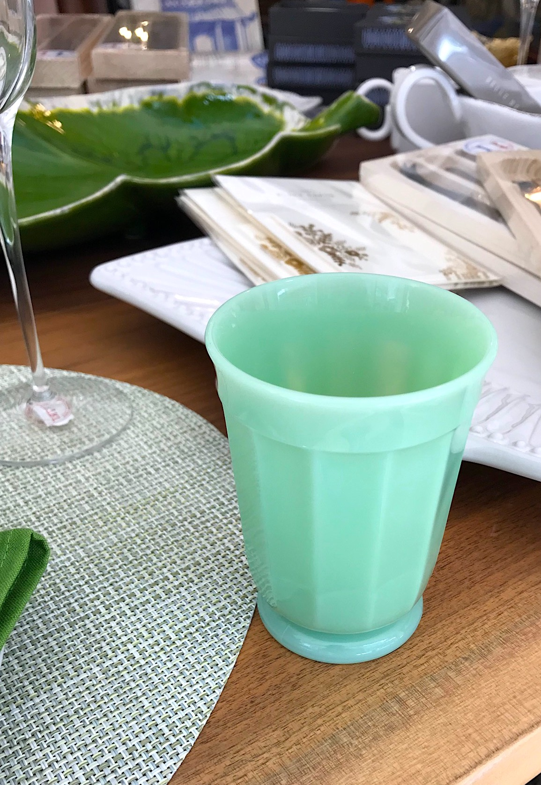
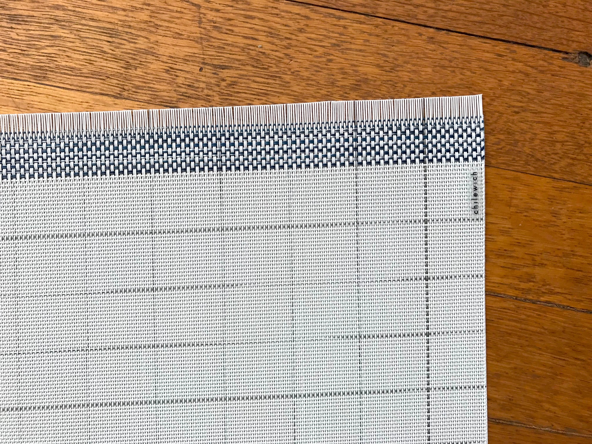
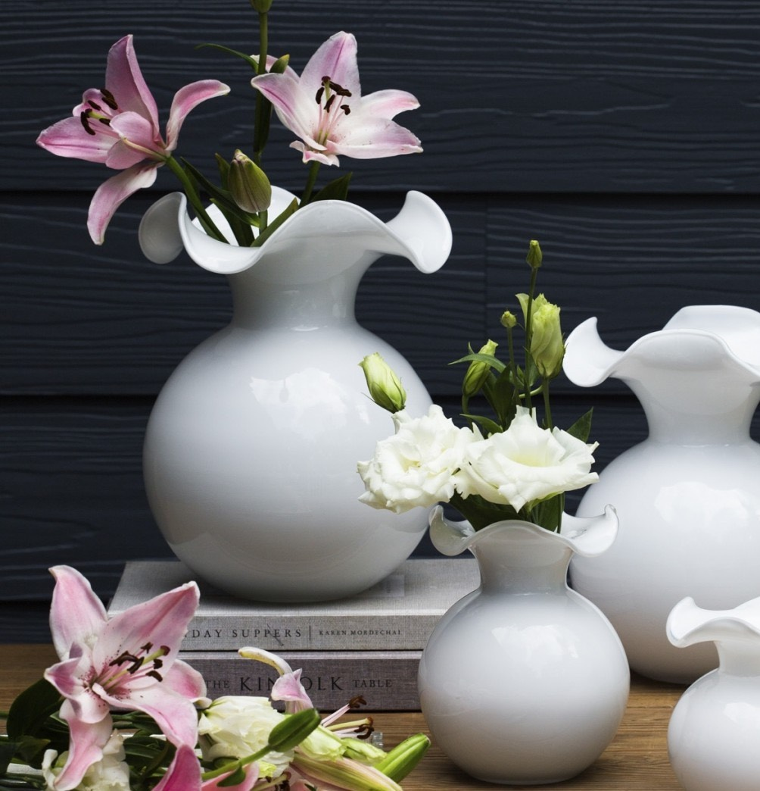

Please feel free to browse the items listed here from Chet Miller. If you have any questions or wish to order any of them, please email Chet Miller at

Paulette Rollo Yellow Blanket

The Paulette Rollo designed collection is produced in Scotland and features a wide range of Scottish lambswool, cashmere and merino throws in beautiful contemporary and traditional styles. Styles that work extremely well with modern, contemporary and traditional home and office environments.
Wants: 1
Price: $329.99
Celadon Green Antique Glasses

Lovely green antique glasses have been handed down and found with a keen eye. Pairs well with milk!
Wants: 2
Price: $19.99 each
Chilewich Selvedge Blue and White Placemats

A woven study of contrasts. A grid of thin woven lines at the center of each placemat is edged by a soft fringe from side to side. Both modern and delicate, the color is subtle yet strong. Suitable for indoor and outdoor use. Made in USA with TerraStrand® and Microban®.
Wants: 8
Price: $16.50 each
Vietri Large White Vase

Mouthblown glass transforms into the graceful Hibiscus Glass White Large Fluted Vase, as delicate petals dance around the top expressing joy and happiness. Versatile and elegant, this collection is a lovely accent to your coffee table or dining room.